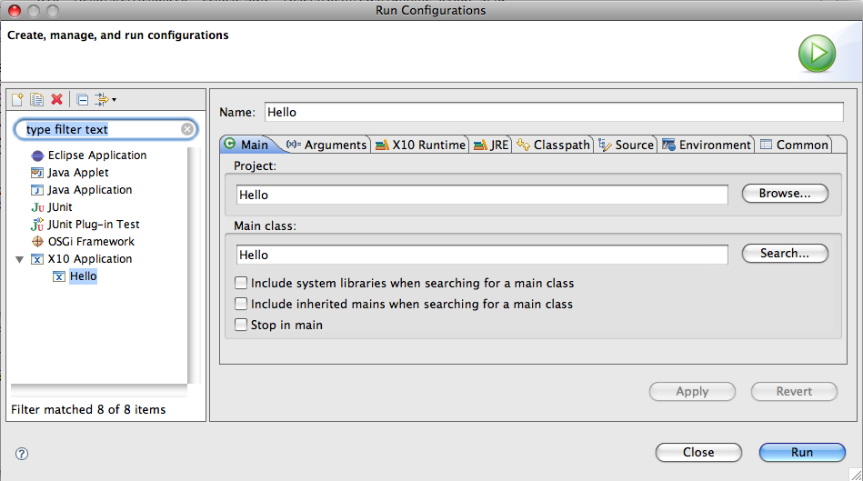
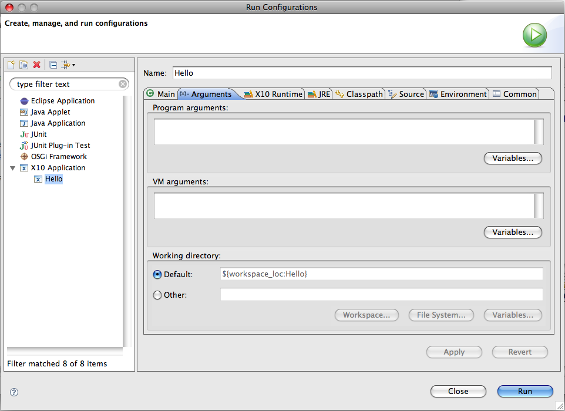

The Console view shows the output (if any).

Not updated for 2.0.5 yet
Not updated for 2.0.5 yet
Not updated for 2.0.5 yet
Hit the Run button to execute your program with all default settings for launching.
The Console view shows the output (if any).
If you want to specify more options for running your program, you'll need to edit the Eclipse launch configuration.
Next to the run button, there is a downward-pointing arrow. Select that and select "Run Configurations..." Alternatively, you can select the Run menu, and under that, select "Run Configurations..."
(Note: we describe the behavior of Eclipse 3.4. Eclipse 3.3 and other versions of Eclipse may
label the menu items slightly differently.)

If your project was selected, this dialog is shown with your existing launch configuration shown, assuming you executed the example above to run your program at least once. The "Main" tab is selected when this dialog is shown. See the "Hello" launch configuration listed under "X10 Application" below on the left pane.
If you need to make a new launch configuration, then select "X10 Application" in the list on the left, and select the "New" button to create one.
On the main tab, if your Project isn't already selected ("Hello" in our case), use the Browse button
to select the project, or enter it in the text field. To select the Main class, use the Search button.
If you use the Search button,
you may be presented with several items - choose the "Main - Hello" class.

Select the "Arguments" tab to specify arguments to your program (if any).

Program arguments will be passed to the Main method, and VM arguments are used in the launching virtual machine.
If you specify at least one program argument here, the Hello World sample code will print it in the console when
you run.
VM arguments let you control other things: for example, to launch with assertions turned on, add "-ea" to the VM arguments.
To start your X10 application, Select the "Run" button in the lower right corner of the launch
configuration dialog.
The program runs, and the output appears in the console view.